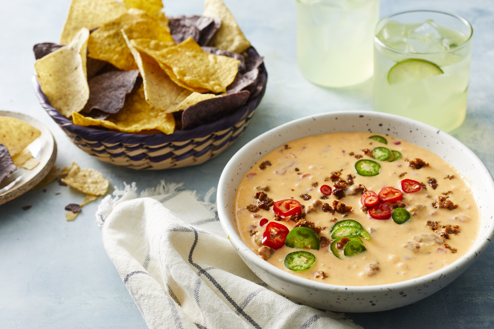

Queso Dip

When I couldn't figure out what to do with a roll of bulk chorizo sausage, this recipe was born.
It may sound similar to other dip recipes, but don't let that fool you...the flavor of this dip definitely sets it
apart from the rest. This also reheats well. Enjoy!
Ingredients
- 10 ounces bulk chorizo sausage
- 1 (10 ounce) can diced tomatoes with green chile peppers (such as RO*TEL®), drained
- 1 (8 ounce) package cream cheese, cubed
- 1 (8 ounce) package processed cheese (such as Velveeta®), cubed
Directions
- Cook and stir chorizo sausage in a skillet over medium heat until cooked completely, 5 to 7 minutes; drain and transfer to a slow cooker.
- Stir diced tomatoes, cream cheese, and processed cheese in with the chorizo.
- Cook on Low until cheese is melted, stirring occasionally, 1 1/2 to 2 hours.